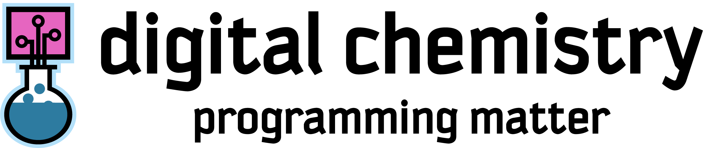
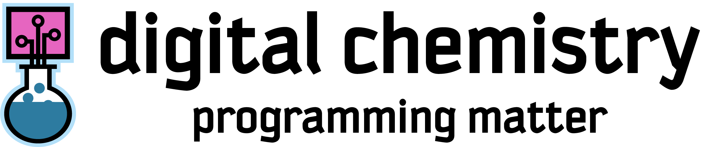

Talking Chemical Synthesis and AI with Digital Chemistry Lab Founder, Prof. Lee Cronin!
3.4M views · 6 months ago
Chemify, the University of Glasgow spin-out company headed by Lee Cronin, has been featured as a 2022 Venture Winner in Falling Walls.
3.1M views · 8 months ago
Talking Chemical Synthesis and AI with Digital Chemistry Lab Founder, Prof. Lee Cronin!
1.4M views · 5 months ago
Talking Chemical Synthesis and AI with Digital Chemistry Lab Founder, Prof. Lee Cronin!
0.4M views · 1 month ago
Chemify, the University of Glasgow spin-out company headed by Lee Cronin, has been featured as a 2022 Venture Winner in Falling Walls.
1.4M views · 6 months ago
Talking Chemical Synthesis and AI with Digital Chemistry Lab Founder, Prof. Lee Cronin!
7.4M views · 3 months ago
Talking Chemical Synthesis and AI with Digital Chemistry Lab Founder, Prof. Lee Cronin!
2.4M views · 12 months ago
Chemify, the University of Glasgow spin-out company headed by Lee Cronin, has been featured as a 2022 Venture Winner in Falling Walls.
4.5M views · 7 months ago
Talking Chemical Synthesis and AI with Digital Chemistry Lab Founder, Prof. Lee Cronin!
1.4M views · 3 months ago